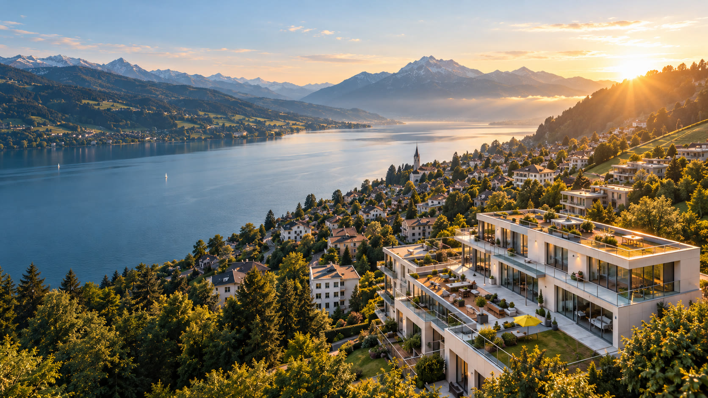
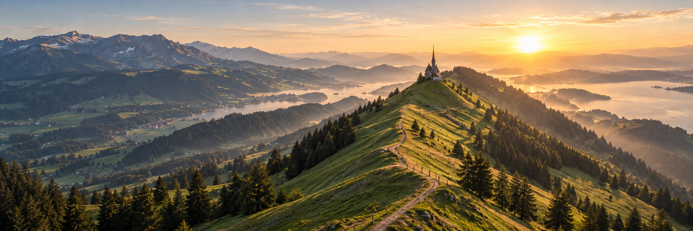

Professionelle Drohnenaufnahmen
Mehr als Bilder.
Ein Vorsprung.
Professionelle Luftaufnahmen für Immobilien, Bauprojekte und Unternehmen in der Ostschweiz.
Unverbindlich anfragen →Unsere Leistungen
Vielseitig. Präzise. Eindrucksvoll.
Wir liefern hochwertige Luftaufnahmen Immobilien Ostschweiz und Drohnenfotos Makler St. Gallen – professionell, effizient und mit einem geschulten Blick fürs Wesentliche. Nur Drohnenaufnahmen, portal-fertig.
HDR-Qualität
Für maximale Bildwirkung
BAZL-konform
Offiziell und gesetzeskonform
Vollumfänglich versichert
Ihr Projekt in sicheren Händen
Regional & flexibel
Schnell vor Ort in der Ostschweiz
Baudokumentation
Projekte & Baudokumentation
Baudokumentation Drohne Ostschweiz — vergleichbarer Fortschritt aus der Luft.
Fortschritt wird erst wertvoll, wenn er vergleichbar wird.
Professionell fliegen bedeutet Verantwortung.
Rechtssicher. Versichert. Planbar.
Ostschweiz Luftbild arbeitet mit den erforderlichen Voraussetzungen für professionelle Einsätze und verfügt über entsprechenden Versicherungsschutz. BAZL-konform — für Makler und Bauträger in St. Gallen und der Region.
Mehr zur Sicherheit →FAQ
Häufige Fragen
Fliegen Sie BAZL-konform?
Ja. Ostschweiz Luftbild arbeitet mit den erforderlichen Voraussetzungen für professionelle Drohneneinsätze in der Schweiz und fliegt BAZL-konform — rechtssicher und planbar.
Sind die Einsätze versichert?
Ja. Alle Einsätze sind vollumfänglich versichert, damit Ihr Projekt in sicheren Händen liegt.
Machen Sie auch Bodenfotos oder Interieurs?
Nein. Wir sind Drohnen-Spezialisten: nur Luftaufnahmen — keine Bodenfotos, keine Interieurs. So bleibt der Fokus auf Lage, Architektur und Baufortschritt aus der Luft.
Was kostet ein Aerial-Set für Makler?
Für neue Makler in St. Gallen und Agglomeration: erstes Objekt gratis (4–6 HDR). Danach CHF 190 für ein volles Aerial-Set. Nur Drohnenaufnahmen.
In welchen Regionen sind Sie unterwegs?
Schwerpunkt Ostschweiz: St. Gallen, Wittenbach, Gossau, Gaiserwald, Rorschach, Goldach, Wil, Rheintal, Appenzell Ausserrhoden, Thurgau (Bodensee) und Toggenburg.
Wie schnell sind die Bilder lieferbereit?
In der Regel portal-fertig nach menschlicher Bildbearbeitung — typischerweise innerhalb weniger Werktage nach dem Flug. Bei Baudokumentation nach vereinbartem Rhythmus.

Die Ostschweiz
Unsere Heimat.
Ihre Perspektive.
Wir zeigen die Region aus einem neuen Blickwinkel.
Mehr über uns →Bereit für neue Perspektiven?
Jetzt unverbindlich anfragen.
Wir beraten Sie gerne persönlich und finden die passende Lösung für Ihr Projekt.
Unverbindlich anfragen →